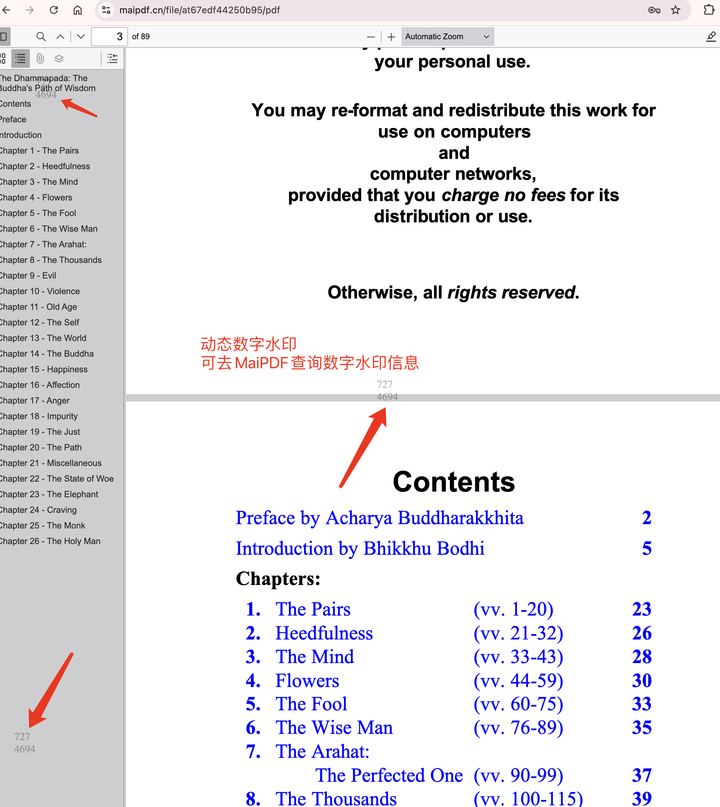
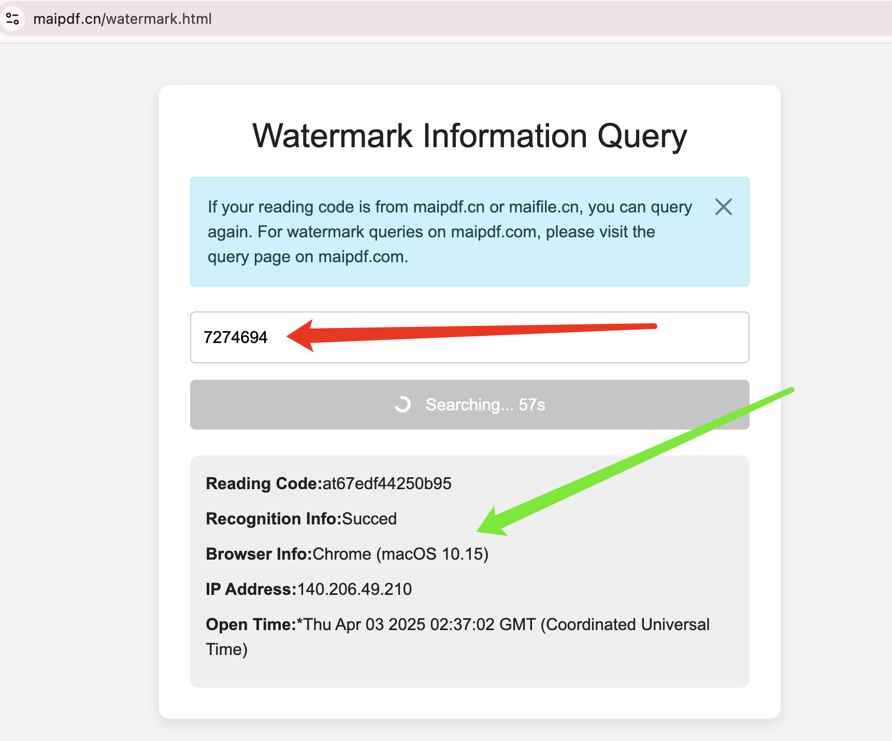

揭秘：PDF访问者追踪的隐秘方法
在数字化时代，了解谁在查看您的PDF文档已成为商业智能的重要组成部分。本文将揭示专业级的PDF访问者追踪技术，帮助您获得前所未有的文档情报能力。
⚠️ 法律声明：
本文介绍的技术仅供合法的商业用途、安全审计或在获得适当授权的情况下使用。请始终遵守当地的隐私法律法规。
流程图
交互式流程图
flowchart TD
A[开始] --> B[处理步骤]
B --> C[收集数据]
C --> D[分析结果]
D --> E[完成]
style A fill:#667eea,stroke:#764ba2,stroke-width:2px,color:#fff
style E fill:#48bb78,stroke:#38a169,stroke-width:2px,color:#fff
🎯 为什么需要隐秘追踪？
核心应用场景
- 商务谈判 - 了解对方是否真正重视您的提案
- 竞争分析 - 监控竞争对手对您内容的关注度
- 内部安全 - 追踪敏感文档的内部流传情况
- 销售优化 - 识别高意向客户的阅读行为
- 法律取证 - 收集文档访问的法律证据

🔬 隐秘追踪技术解析
基础级
🎭 方法一：智能链接伪装
将PDF转换为看似普通但实际具有追踪功能的链接，接收者完全察觉不到任何异常。
技术原理：
- PDF上传到专业追踪平台
- 系统生成伪装成普通PDF的链接
- 链接包含隐藏的追踪参数
- 后台静默记录所有访问数据
伪装技巧：
- 使用常见的文件名格式
- 选择可信的域名结构
- 添加适当的文件扩展名

高级级
🔍 方法二：隐形像素追踪
在PDF中嵌入肉眼不可见的追踪元素，即使文档被下载到本地也能实现追踪。
实现技术：
- 1x1像素图像 - 从追踪服务器加载的透明图片
- 隐藏JavaScript - 支持JS的PDF阅读器中执行
- 不可见水印 - 包含回调URL的透明标记
- 元数据追踪码 - 嵌入在文档属性中

专家级
🎪 方法三：动态个性化追踪
为每个接收者创建独特的PDF版本，实现精确的个体追踪和泄露源头识别。

个性化元素：
- 独特的文档ID编码
- 接收者专属水印
- 个性化追踪URL
- 隐藏的身份标识符
📊 可获取的情报信息
🌐 网络情报
- 精确IP地址 - 访问者的网络位置
- 地理定位 - 城市、地区、国家信息
- 网络类型 - 企业网络、家庭宽带、移动网络
- 代理检测 - 识别VPN或代理服务器使用
- ISP信息 - 网络服务提供商详情
📱 设备与行为情报
- 设备指纹 - 独特的设备识别码
- 阅读模式 - 每页停留时间分析
- 访问频率 - 重复访问的时间间隔
- 分享行为 - 文档转发和传播路径
- 交互操作 - 下载、打印、复制等行为

🛠️ 实施策略详解
🔒 反检测技术

📈 情报分析与应用
